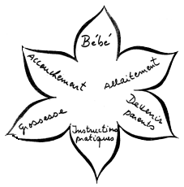
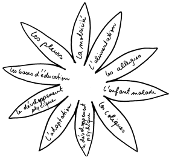
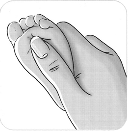

BON CADEAU PRÉPARATION À LA NAISSANCE
AU LIEU DE CHOISIR UN CADEAU DE LA LISTE DE NAISSANCE, FAITES UN CADEAU ORIGINAL AUX FUTURS PARENTS !
| La préparation à la naissance permet, à la fois, une approche théorique, physique et psychologique de la maternité. Les futurs parents vont pouvoir bénéficier grâce à cette méthode de toutes les informations nécessaires à leur bien-être avant, pendant et après la naissance de leur enfant. |
Les parents peuvent choisir le lieu et la langue des cours qui leur convient.
Les cours se donnent à ANGELSBERG, SCHOOS ou à Luxembourg-VILLE.
(Seuls les cours français ont lieu à Luxembourg)

Lors des cours théoriques les femmes apprennent aussi les techniques de respiration et les positions, qui permettent de mieux supporter les contractions et les poussées.
Quant à l’approche psychologique de la préparation à la naissance, elle s’effectue grâce à l’écoute de la sage-femme qui permettra au couple d’exprimer ses attentes, ses craintes et ses inquiétudes.
1-4 séances groupe français à Luxembourg→( max.100€)
1-5 séances groupe luxembourgeois à Luxembourg→(max.125€)
1-6 séances groupe luxembourgeois à ANGELSBERG + SCHOOS→(max.150€)
(Veuillez me contacter par E-mail ou GSM)
BONS CADEAUX POUR LES JUNIORMEETINGS
DE 1-5 JUNIORMEETINGS
Profitez de cette offre et faites un cadeau original à un couple qui vient d’avoir un enfant.
Les Juniormeetings sont tenus par moi même et se font dans des petits groupes avec ou sans partenaires. Les bébés sont les bienvenus.
Ces cours d’informations ont lieux les après-midi et accompagnent les jeunes mères (ou / et pères) quelques semaines pour les rassurer dans leur nouveau rôle. Ces cours conviennent aussi à des couples qui ont déjà des enfants car ils reçoivent des renseignements par un professionnel et ils peuvent échanger leurs expériences avec d’autres parents.

Les mères (ou parents) peuvent choisir l’endroit des Juniormeetings:
à Angelsberg ou à Luxembourg/ Belair.
Ils sont tenus en luxembourgeois à Angelsberg et Schoos et en français et luxembourgeois à Luxembourg. Pour toute demande :
Tél: 691 483 283 ( Michèle Finck) ou par E-mail à: michele.finck@sage-femme.lu
Profitez d’un cours de massage pour bébés si vous voulez offrir un cadeau original à une jeune mère ou père.
Le massage se fera dans des petits groupes et dans une ambiance familiale.
Le massage pour bébés a un effet positif sur le développement psychique et physique de l’enfant et aide les parents à mieux connaître leur bébé. Le massage du bébé est une expérience enrichissante et valorisante pour tous les participants.
Les parents peuvent choisir le lieu du massage qui leur convient. Les cours se donnent à ANGELSBERG, SCHOOS ou LUXEMBOURG-VILLE.
Toute demande peut être adressée par appel
au 691 483 283 auprès de Michèle Finck
ou par E-mail au : michele.finck@sage-femme.lu